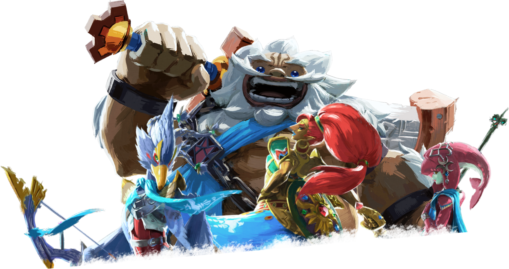
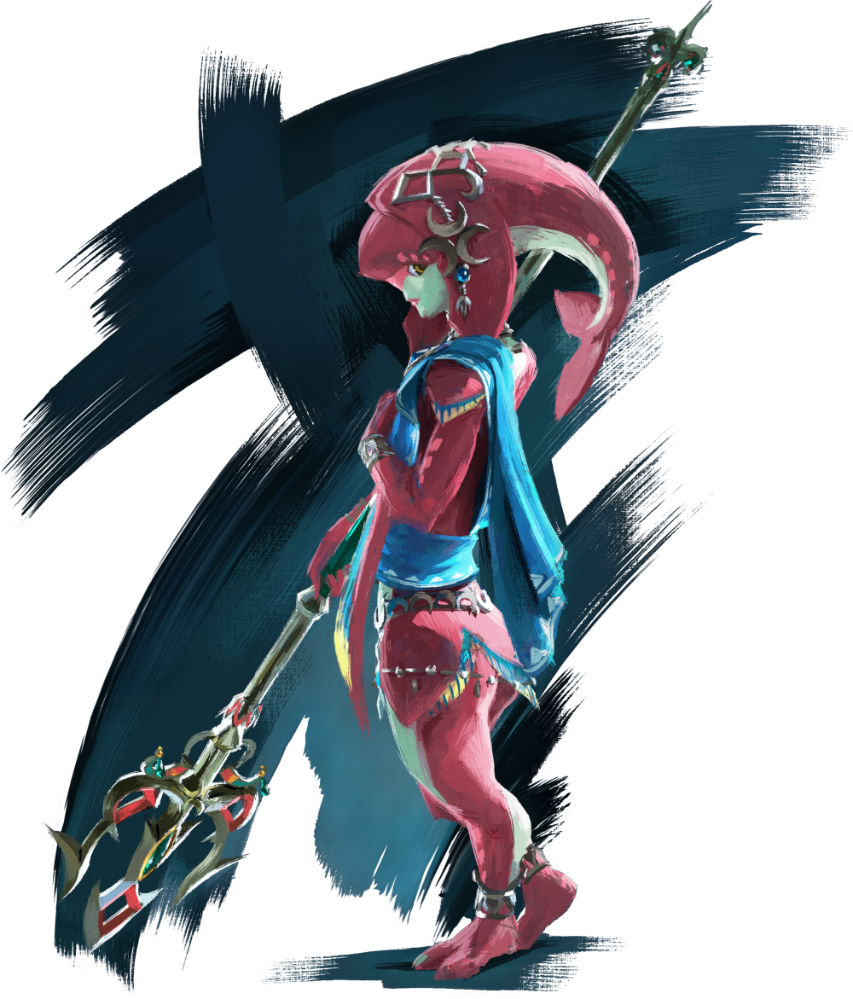
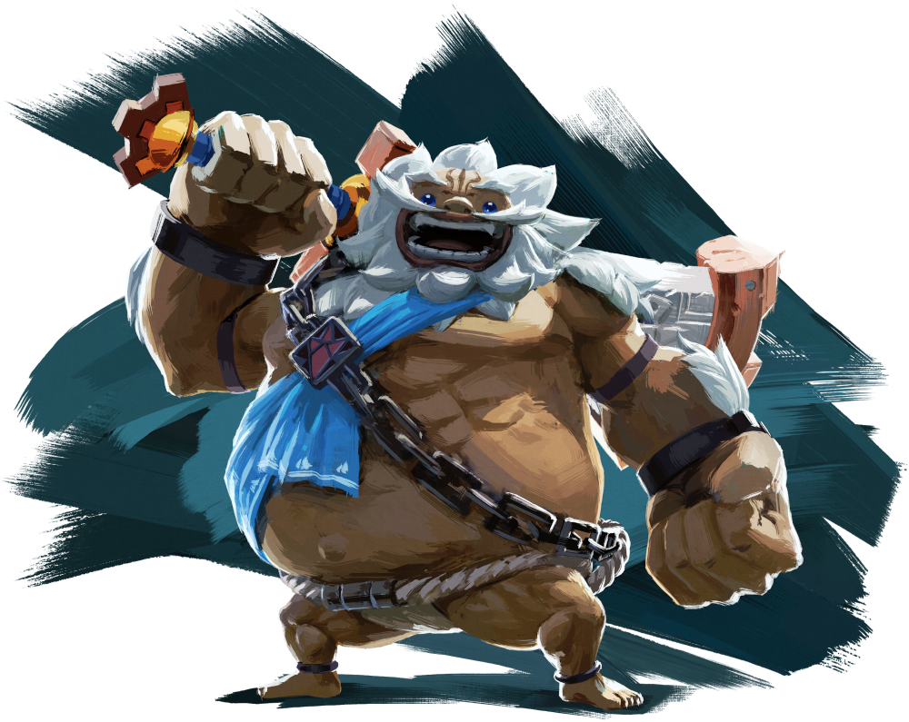
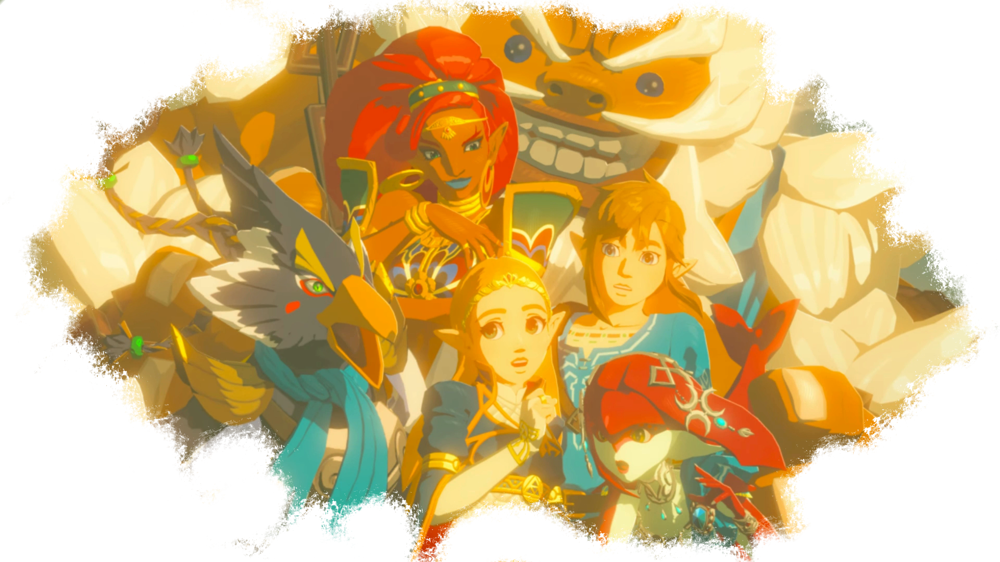

Les Prodiges

Les prodiges sont un groupe d'élites issus de quatre des principales races vivant en Hyrule, choisis pour être les pilotes des Créatures Divines, des merveilles d'une technologie oubliée qui ont largement contribué à la dernière défaite de Ganon. Ils sont reconnaissables au vêtement bleu qu'ils portent, symbole d'appartenance au groupe.
Chaque créature est liée à un peuple, et c'est un immense honneur pour quiconquede devenir un prodige, et de servir son peuple autant que la famille royale.
Les prodiges ayant servi Zelda lors de la funeste bataille contre Ganon sont des personnages centraux dans la lutte contre le fléau, évidemment, mais également dans le contrôle des mastodontes mécaniques avec lesquels ils furent connectés au point qu'ils les considèrent presque comme des extensions d'eux-même.
Mipha

Mipha est la princesse de la tribu Zora. Fille du roi Dorepha, elle est assez timide et réservée. Elle ne se met jamais en avant lors des réunions avec ses compagnons, et est peu sûre d'elle quand elle le fait.
La jeune fille est la pilote de Vah'Ruta, créature divine en forme d'éléphant pouvant utiliser l'eau avec beaucoup d'efficacité. Elle est également la porteuse de la lance d'écaille radieuse, arme trésor de sa tribu.
Mipha posséde un pouvoir appelé "la prière de Mipha". Grâce à celui-ci, la jeune zora peut soigner les blessures, peu importe leur gravité.
De son vivant, Mipha est tombée amoureuse de Link. Elle n'a jamais eu le courage de lui avouer ses sentiments, mais a pris le soin de lui créér une tunique Zora, qui selon la tradition, est destinée à l'élu du coeur de celle qui l'a confectionnée. Malheureusement, elle n'a jamais osé lui remettre.
La zora a succombé à l'assaut de Ganon. Un siècle plus tard, lorsque Link vient reprendre le contrôle de Vah'Ruta, Mipha lui apparaît en esprit. Elle tente de faire comprendre au jeune homme ses sentiments, lui fait ses adieux et reprend le contrôle de sa créature pour finir ce qu'elle a commencé un siècle auparavant. Mais surtout, la zora exprime un unique regret: celui de ne pas avoir pu revoir son père.
Avant de le quitter pour de bon, elle fait un dernier cadeau à l'élu de son coeur: elle lui offre son pouvoir de guérison.
Mipha était très aimée par son peuple de son vivant. Les zoras ont une longévité bien plus longue que celle des Hyliens. AInsi, lorsque Link revient cent ans plus tard, beaucoup ne lui ont pas pardonné la mort de leur princesse et refusent de lui parler. Une statue d'elle a été érigée en son hommage.
Daruk

Daruk est un fier guerrier de la tribu Goron. Aussi fort qu'amical, il est devenu le prodige Goron en étant choisi par la famille royale pour piloter Vah'Rudania, la créature Divine, titan de fer ressemblant beaucoup à une Salamandre et pouvant se servir à loisir de la puissance du Volcan de la région et étant capable de cracher des flammes imposantes et dévastatrices.
L'arme de prédilection de notre goron est un espadon gigantesque appelé le Brise-Montagne. Le guerrier le manie avec une aisance inégalée, comme si l'arme avait le poids d'une plume, et s'en sert même comme d'un éventail. Link en revanche, doit utiliser toutes ses forces et ses deux mains pour manipuler l'arme, avec bien plus de difficultés. Daruk a un pouvoir très puissant appelé "le bouclier de Daruk". Grâce à celui-ci, le goron est invulnérable et peut se prémunir des blessures.
Daruk est un meneur né. Il s'impose facilement et donne des directives aux autres prodiges, qui l'écoutent sans aucune hésitation. Lors de la résurection de Ganon, la princesse Zelda était impuissante et incapable de réagir. C'est le goron qui a pris les rennes de l'équipe en disant quoi faire. La princesse elle-même s'est pliée à ses recommandations.
D'une loyauté sans faille, Daruk ne lâche jamais rien et se bat jusqu'au bout. Amical et très doux au quotidien, bien qu'un peu bourru (ce qui n'est pas surprenant venant d'un goron), Daruk est dur et impitoyable au combat. Il semble fortement apprécier Link, en qui il croit fortement, et qu'il surnomme toujours "p'tit gars".
Le guerrier est tombé au combat lors du retour du fléau, qui l'a enfermé dans sa créature Divine avant d'envoyer l'un de ses sbires maléfiques le tuer. Lorsque Link libère le colosse, un siècle après, le Goron le remercie, lui disant qu'il n'a jamais douté du fait qu'il viendrait le libérer. Il transmet son pouvoir de protection au jeune Hylien et reprend le contrôle de sa créature pour affaiblir Ganon.
Le seul regret de Daruk aura été de ne pas savoir comment vont les siens, et de n'avoir rien pu faire pour les sauver.
Revali

Revali est un piaf, fier et orgeuilleux. Ce personnage haut en couleur est assez mystérieux et l'on sait peu de choses à son sujet. En revanche, il est clair qu'il n'aime pas Link. Il ne voit pas pourquoi lui, le grand Revali, serait au service d'un Hylien sous prétexte qu'il ait été choisi par "une vieille épée rouillée".
Le piaf est reconnu comme était le meilleur archer de son peuple, seul capable de manipuler l'arc de l'aigle, qui deviendra son arme attitrée. Il est le pilote de la créature Divine Vah'Medoh, gigantesque oiseau mécanique capable de voler. Enfin, il est capable d'utiliser un pouvoir unique, "la rage de Revali", qui lui permet de créer des courants ascendants lui servant à voler comme bon lui semble.
Le piaf a, comme les autres prodiges, été tué dans sa créature Divine. Lorsque Link vient libérer son âme, le piaf s'excuse auprès de lui et reconnait enfin sa valeur. Il lui transmet son pouvoir et attaque Ganon avec son colosse aviaire.
Contrairement à Mipha ou Daruk, Revali ne semble pas avoir de regrets particuliers.
Urbosa

Urbosa est la suzeraine des Gerudo, le peuple du désert. Lorsque la princesse Zelda vient la trouver pour lui demander son aide en tant que prodige, c'est immédiatement qu'elle accepte, et sans hésiter. Urbosa a pour la jeune fille un respect et une tendresse comparable à aucun autre personnage dans le jeu. Elle appelle Zelda "madame", en référence à la mère de princesse, décédée alors qu'elle était encore enfant. La Gerudo se comporte envers Zelda comme le ferait Impa dans les autres opus, comme une nourrice. Les deux femmes semblent très proches.
Urbosa a été choisie pour être la pilote de Vah'Naboris, créature Divine à la forme de chameau qui peut générer des tempêtes de sables et des éclairs mortels à volonté. Au combat, elle utilise le"cimetère des sept joyaux", ainsi que le "bouclier des sept joyaux", deux armes considérées comme des trésors par les Gerudo. Enfin, elle revêt le "masque du tonerre", une autre relique lui permettant de l'immuniser à la foudre. Urbosa est capable d'utiliser un pouvoir appelé "la colère d'Urbosa", capacité consistant à invoquer la puissance de la foudre. La guerrière parvient à utiliser cette capacité au maximum sans même avoir besoin de porter son masque.
Urbosa est, comme ses comparses, restée coincée à l'intérieur de sa créature Divine et en est morte. Lorsque Link vient reprendre le contrôle de Vah'Naboris, celle-ci le remercie et lui offre son pouvoir. Elle a une requête: le guerrier doit dire à la princesse que leur échec du siècle dernier n'est pas de leur faute. Elle lui demande aussi de prendre soin de Zelda. Elle attaque ensuite le château avec sa machine. Comme le prodige piaf, elle ne semble pas avoir de regrets quant à sa vie passée.
